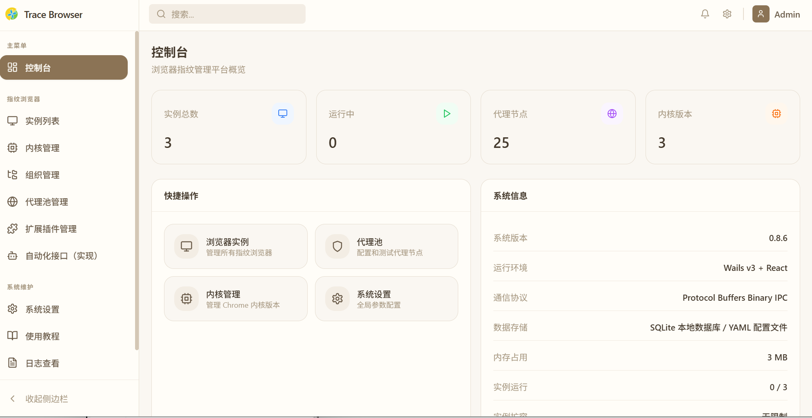

配置和运行数据留在本机，便于备份、迁移和自主控制。
上手路径
四个动作，形成一组可运行环境
新手演示会在软件内继续指向每一个入口。官网只保留必要路径，让用户知道从哪里开始。
准备资源
下载或扫描 fingerprint-chromium；导入 Clash 订阅、YAML、Base64 分享链接或批量代理。
创建实例
填写基础信息，绑定代理、指纹、标签、分组和启动参数。
组织规则
用默认内容、标签和分组，让新增实例自动继承团队规范。
启动与同步
批量生成、备份恢复和窗口同步服务于同一个实例列表。
核心能力
让环境管理保持秩序，而不是膨胀成按钮墙
Trace Browser 的能力被拆成三个层面：资源、实例、动作。每一层都服务于更稳定的多账号环境。
内核、代理、插件先归位
下载内核、扫描本地目录，导入代理订阅与扩展插件，先把可复用资源放进工作台。
Shopify-US-01
US 42ms
店铺组
TikTok-EU-02
DE 68ms
素材组
Amazon-Asia
SG 35ms
运营组
批量操作有边界
批量生成、备份恢复、窗口同步都围绕实例列表展开，不把操作拆散到多个孤立入口。
实例隔离
代理订阅
指纹参数
标签分组
插件备份
窗口同步
界面预览
真实界面，不靠概念图解释
控制台、实例列表、代理池、组织管理、扩展管理和系统设置，均来自当前产品截图。

运行状态、实例统计和维护入口在第一屏完成归纳。
适合场景
需要稳定区分环境的地方，都适合先建立实例秩序
跨境电商与社媒运营
按店铺、地区、账号状态管理实例，稳定绑定代理出口和插件组合。
本地网络与风控测试
快速切换代理、指纹和启动参数，用独立实例复现不同网络状态。
多窗口批量操作
通过窗口同步减少重复点击，配合批量生成和备份恢复处理多实例工作流。
持续进化
云端同步会成为下一条清晰边界
后续可扩展 WebDAV、S3、SFTP、本地目录等协议，让配置备份、迁移和多设备恢复更加自然。